Differential Carrier Assembly Rear (4WD) Disassembly |
| 1. Fix Differential Carrier Assembly Rear |
Fix the rear differential carrier assembly to the overhaul attachment.
| 2. Remove Stud Bolt |
Remove the 4 stud bolts from the transmission coupling assembly.
| 3. Remove Rear Differential Drain Plug |
 |
Using a socket hexagon wrench 10mm, remove the rear differential drain plug and gasket.
| 4. Remove Rear Differential Filler Plug |
 |
Using a socket hexagon wrench 10mm, remove the rear differential filler plug and gasket.
| 5. Remove Rear Differential Carrier Cover Plug |
 |
Using a socket hexagon wrench 8mm, remove the rear differential carrier cover plug.
| 6. Remove Rear Differential Carrier Cover Breather Plug |
Using a chisel and hammer, raise the rear differential carrier cover breather plug slightly.
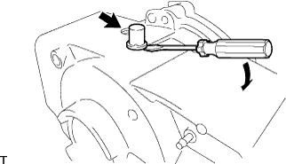 |
Lightly pry with a screwdriver to remove the rear differential carrier cover breather plug.
| 7. Inspect Transmission Coupling Assembly Runout |
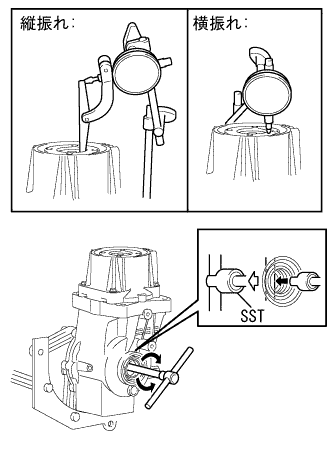 |
Install a dial indicator and lever type stylus at a right angle to the inside surface of the transmission coupling assembly.
Using SST, turn the transmission coupling assembly forward and in reverse to measure its vertical runout.
Install a dial indicator at a right angle to the transmission coupling assembly at the position shown in the illustration.
Using SST, turn the transmission coupling assembly forward and in reverse to measure its lateral runout.
| 8. Remove Transmission Coupling Assembly |
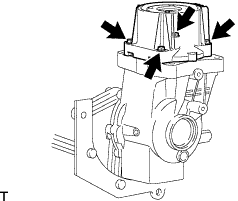 |
Remove the 4 bolts, and using a plastic hammer, lightly tap the rear differential carrier cover to remove it from the rear differential carrier assembly.
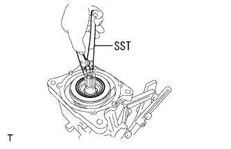 |
Using SST, remove the snap ring.
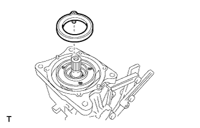 |
Remove the solenoid from the yoke.
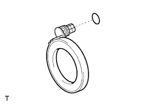 |
Remove the O-ring from the solenoid.
 |
Using a socket hexagon wrench 5mm, remove the 3 bolts and remove the yoke from the differential carrier assembly.
| 9. Remove Transmission Coupling Conical Spring Washer |
 |
Remove the transmission coupling conical spring washer from the rear differential carrier assembly.
| 10. Remove Transmission Coupling Shim |
 |
Remove the transmission coupling shim from the rear differential carrier assembly.
| 11. Inspect Differential Ring Gear Backlash |
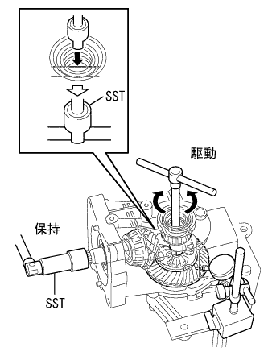 |
Insert a dial indicator through the rear differential carrier cover plug hole, and place it at a right angle to the tip of the ring gear tooth surface.
Using SST, hold the drive pinion.
Using SST, turn the rear differential case forward and in reverse to check the backlash.
| 12. Inspect Differential Drive Pinion Preload |
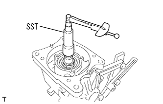 |
Using SST and a torque wrench, measure the preload (starting torque) within the backlash range between the differential drive pinion and differential ring gear.
| 13. Inspect Total Preload |
Using SST and a torque wrench, check the preload (starting torque) with the differential drive pinion and differential ring gear tooth surfaces in contact.
| 14. Remove Rear Differential Side Gear Shaft Oil Seal |
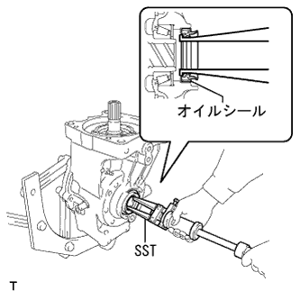 |
Using SST, remove the 2 rear differential side gear shaft oil seals from the rear differential carrier assembly.
| 15. Remove Diaphragm Oil Seal |
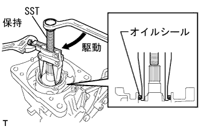 |
Using SST, remove the diaphragm oil seal from the rear differential carrier assembly.
| 16. Remove Rear Drive Pinion Nut |
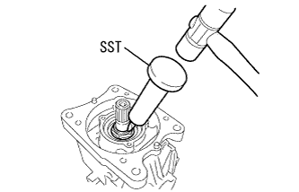 |
Using SST and a hammer, unstake the rear drive pinion nut.
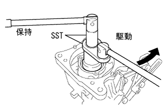 |
Using SST, hold the differential drive pinion and remove the rear drive pinion nut from the differential drive pinion.
| 17. Remove Rear Drive Pinion Tapered Roller Bearing Front |
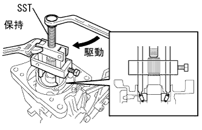 |
Using SST, remove the rear drive pinion tapered roller bearing front (inner race) from the rear differential carrier assembly.
| 18. Remove Differential Side Bearing Retainer |
 |
Remove the 8 bolts.
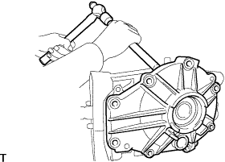 |
Using a brass bar and hammer, lightly tap the differential side bearing retainer to remove it.
| 19. Remove Rear Differential Case Sub-assembly |
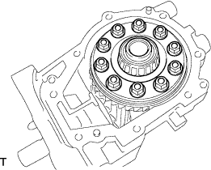 |
Remove the rear differential case from the rear differential carrier.
| 20. Remove Differential Drive Pinion |
 |
Remove the differential drive pinion from the rear differential carrier.
| 21. Remove Rear Differential Drive Pinion Bearing Spacer |
 |
Remove the rear differential drive pinion bearing spacer from the differential drive pinion.
| 22. Remove Rear Drive Pinion Tapered Roller Bearing Rear |
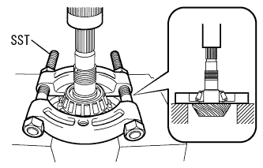 |
Using SST and a press, remove the rear drive pinion tapered roller bearing rear (inner race) from the differential drive pinion.
Remove the rear differential drive pinion washer.
| 23. Remove Rear Drive Pinion Tapered Roller Bearing Front |
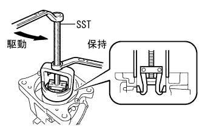 |
Hook the claws of the SST onto the rear drive pinion tapered roller bearing front (outer race) through the cutouts in the differential carrier assembly.
Using SST, remove the rear drive pinion tapered roller bearing front (outer race) from the rear differential carrier.
| 24. Remove Rear Drive Pinion Tapered Roller Bearing Rear |
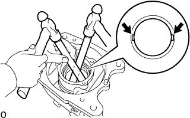 |
Using a brass bar and hammer, remove the rear drive pinion tapered roller bearing rear (outer race) while tapping it lightly and evenly.
| 25. Remove Rear Differential Case Bearing |
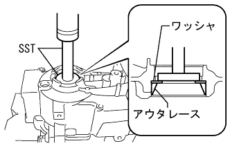 |
Using SST and a press, remove the rear differential case bearing RH (outer race) and rear differential side gear shaft plate washer from the rear differential carrier.
| 26. Remove Rear Differential Case Bearing |
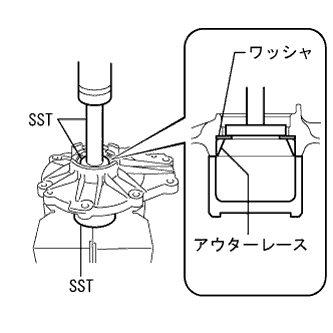 |
Using SST and a press, remove the rear differential case bearing LH (outer race) and rear differential side gear shaft plate washer from the differential side bearing retainer.
| 27. Remove Rear Differential Case Bearing |
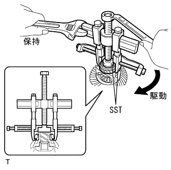 |
Using SST, remove the rear differential case bearing RH (inner race) from the rear differential case.
| 28. Remove Rear Differential Case Bearing |
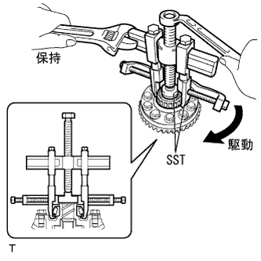 |
Using SST, remove the rear differential case bearing LH (inner race) from the rear differential case.
| 29. Remove Differential Ring Gear |
 |
Using aluminum plates, secure the rear differential case in a vise.
Put matchmarks on the rear differential case and differential ring gear.
Remove the 10 bolts.
Using a plastic hammer, lightly tap the outer circumference of the differential ring gear to remove it from the rear differential case.
| 30. Remove Rear Differential Breather Plug Oil Deflector |
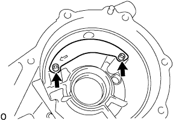 |
Using a socket hexagon wrench 5, remove the 2 bolts and the rear differential breather plug oil deflector.
| 31. Remove Straight Pin |
Remove the 4 straight pins from the rear differential carrier.
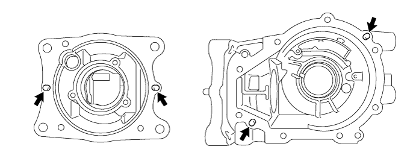